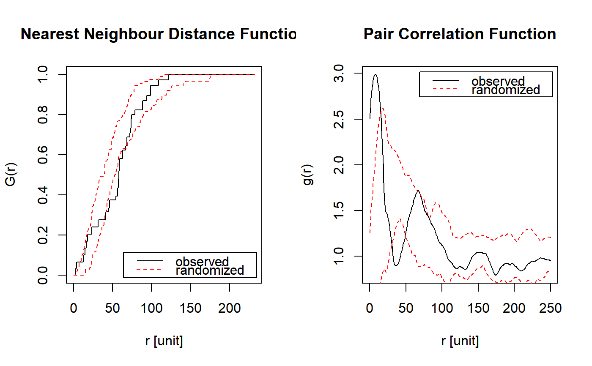
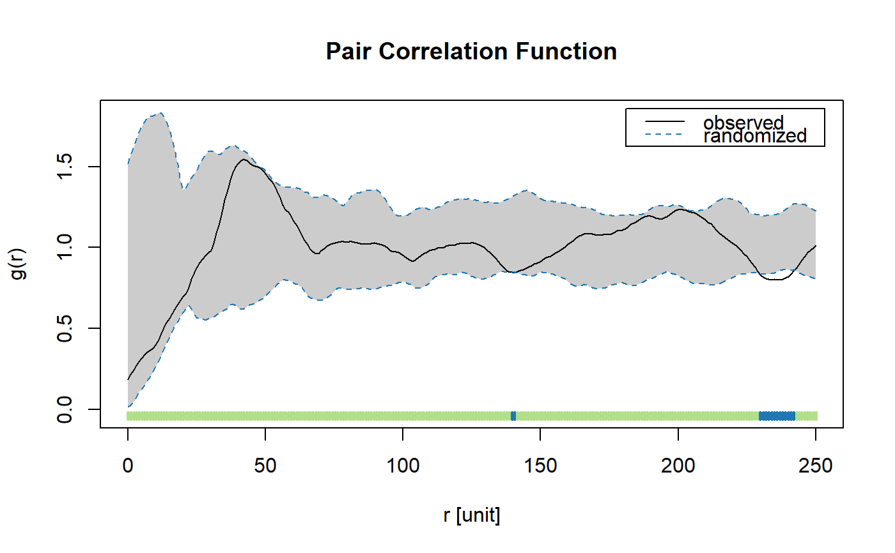

plot_randomized_pattern
plot_randomized_pattern.RdPlot randomized pattern
plot_randomized_pattern(pattern, what = "sf", probs = c(0.025, 0.975), comp_fast = 1000, ask = TRUE, verbose = TRUE)
Arguments
| pattern | List with reconstructed patterns. |
|---|---|
| what | Plot summary functions of point patterns ( |
| probs | Quantiles of randomized data used for envelope construction. |
| comp_fast | If pattern contains more points than threshold, summary functions are estimated in a computational fast way. |
| ask | If TRUE the user is asked to press <RETURN> before second summary function
is plotted (only has influence if |
| verbose | Print progress report. |
Details
The function plots the pair correlation function and the nearest neighbour function
the observed pattern and the reconstructed patterns (as "simulation envelopes".).
For large patterns comp_fast = TRUE decreases the computational demand because no edge
correction is used and the pair correlation function is estimated based on Ripley's
K-function. For more information see estimate_pcf_fast. It is also
possible to plot 3 randomized patterns and the observed pattern using what = "pp".
Examples
#> Warning: Unmarked provided input pattern.#>#>#>#>#>#>#>#>#>#>#>#>#>#>#>#>#>#>#>#>plot_randomized_pattern(pattern_random)#>#>#>#>#>#>#>#>#>#>#>#>#>#>#>#>#>#>#>#>plot_randomized_pattern(pattern_random, what = "pp")#># NOT RUN { marks_sub <- spatstat::subset.ppp(species_a, select = dbh) marks_recon <- reconstruct_pattern_marks(pattern_random$randomized[[1]], marks_sub, n_random = 19, max_runs = 1000) plot_randomized_pattern(marks_recon) # }